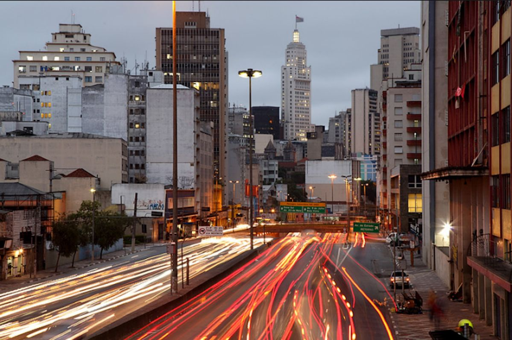
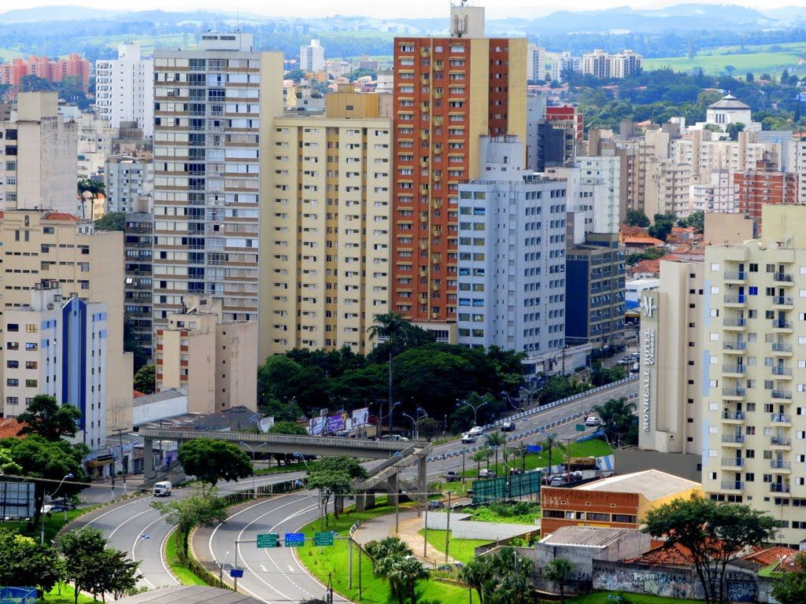
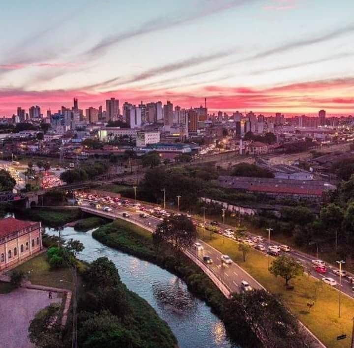

Conheça os principais polos de inovação e tecnologia do estado
A maior metrópole do Brasil e maior polo tecnológico da América Latina

Silicon Valley Brasileira - Centro de pesquisa e desenvolvimento
Polo agroindustrial e tecnológico do interior paulista
Vale da Tecnologia Aeroespacial - Centro de inovação

Polo industrial e tecnológico do interior paulista
Municipio com crescimento tecnológico na região metropolitana